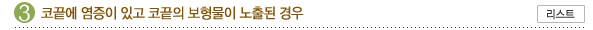

원래는 뼈막 밑에 삽입되어야 할 보형물이 피부 바로 밑에 삽입된 경우, 또는 코뼈의
넓이,높이,길이 등
형태와는 어울리지 않는 보형물이 삽입된 경우, 보형물이 들어갈 위치에 박리가 작게 되어서
보형물이
피부밑에 꽉 끼는 경우 등에는 보형물을 제거하고 정확한 모양과 디멘젼의 보형물을 확실한
위치에
삽입하면 개선되는, 비교적 쉬운 문제입니다.
콧속의 보형물이 안정이 되기 전에 충격이 가해진 경우, 안경을 쓰거나 코를 자꾸 만지는
버릇이 있어서
지속적인 미세한 자극이 보형물에 전해지는 경우, 수술 중에 적절한 박리가 이루어지질 못해서
보형물이
약간 잘못 자리 잡은 경우, 또는 박리된 포켓보다 긴 보형물을 삽입한 경우, 또는 원래
미세한 비만곡이
있었으나 수술 전에 이를 알지 못했던 경우가 있을 수 있습니다. 수술은 코 양측을 대칭적으로
정확히
박리하여 새로운 보형물을 삽입하여야 합니다. 만약 코가 휘어져있는 경우라면 휘어진 코에
맞는
수술법을 적용하여야 합니다.

과도한 크기나 높이의 보형물의 삽입으로 코끝을 세웠을 경우 피부의 신축성이 충분하지
않아 보형물이
피부로부터 강한 힘과 압력을 받아서 아래쪽으로 밀려서 코끝의 피부에 압력이 가해지는 경우입니다.
먼저 보형물을 제거한 후 상처가 아물기를 기다린 후에 남은 흉터가 안정이 되고 난 후에
수술을
고려하게 됩니다. 이 때에도 생체친화력이 좋은 자기조직을 이용하여 수술을 시행합니다.
처음 수술 시에 코끝 수술을 시행하지 않은 경우로 코끝에 위치한 보형물이 시간이 지남에
따라
코끝연골을 양쪽으로 밀어내는 힘이 작용하여 점차 코끝이 낮아 보이고 코끝이 뭉뚝해 보입니다.
코끝연골을 노출시킨 후 서로 봉합을 통해서 묶어주어 가운데로 모이는 역할을 하고 연 골
위의 남는
연부 조직의 일부를 제거하여 그 위에 적합한 물질을 이용하여 좋은 모양을 만들 수 있습니다.
수술 후
원하는 모양이 나오지 않은 경우는 처음수술을 시행한 방법에 따라 차이를 보일 수 있습니다.
처음 수술 시부터 연골 재배치를 시행하였으나 만족스러운 결과를 가지지 못한 경우는 그
안에 생긴
흉이 안정이 일어나고 나서 재배치를 했던 연골 위의 조직을 다듬은 후에 알로덤이나 자기조직을
이용하여 교정을 합니다.
보형물이 들어갈 곳에 정확히 위치하지 못하여 생기는 것으로 뼈의 골막 아래에 위치하지
못하는 경우는
다시 박리하여 보형물을 골막 아래에 정확히 교정하면 됩니다. 골막자체가 처음수술에 찢어져버려서
고정이 되질 못하고 움직이는 경우라면 생체 친화력이 뛰어난 자기 조직 등을 이용하여 고정시킬
수도
있습니다.
처음 수술시 'ㄱ'자 모양의 실리콘으로 콧대와 코끝을 동시에 교정을 한 경우와 수술 후
수술부위의
치유과정에서 안에 피가 조금 고여서 이것이 아물면서 흉이 많이 생긴 경우입니다. 'ㄱ'자
모양의
보형물인 경우는 이를 제거하고 코끝은 연골조작과 적절한 물질을 이용하여 콧대와 분리하여
교정을
하는데 피가 고여서 생긴 경우는 시간이 경과함에 따라 안의 흉들이 많이 부드러워지면서
좋아질 수
있습니다.
'ㄱ'자형 실리콘 보형물로 코끝 까지 무리하게 많이 높힌 코에서 흔히 나타나는 현상으로서,
'ㄱ'자형뿐
아니라 일자형 보형물(고어텍스나 귀연골을 사용한 경우에도)이더라도 나타날 수 있습니다.
일단 코수술 후 세월이 갈수록 점점 코끝의 피부가 불그스럼하거나 푸르스럼한 경우라면 피부가
많이
얇아진 상태라고 보시면 되고 너무 늦지 않게 코재수술전문의에게 진찰받으시는 것이 좋습니다.